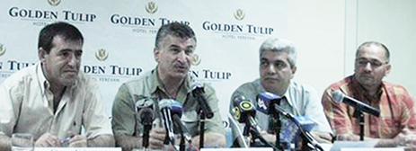

Тимур Цховребов (второй слева) на итоговой пресс - конференции гражданской инициативы "Южнокавказская интеграция: Альтернативный старт" представляет идею о создании гражданской республики
ДАЕШЬ ГРЮК!!!
Всем!!! Читая о наших делах, особенно в Альтернативном старте, у меня появилась идея обратиться к правительствам Азербайджана, Армении и Грузии, я думаю НПО Абхазии, Нагорного Карабаха и Южной Осетии тоже поддержат.
От граждан Южного Кавказа: Просим правительства и парламенты стран на стыке их границ выделить по одному квадратному километру и под патронажем Международных органов ООН, ОБСЕ создать там Гражданскую Республику Южного Кавказа (ГРЮК). Туда смогут приезжать все люди со всего Южного Кавказа и обсуждать насущные проблемы. Начать можно со строительства одной хорошей гостиницы.
Думаю государства не обеднеют, а для международного сообщества получиться огромная экономия. Посчитайте, во что обходятся поездки в страны Европы для встреч в южнокавказском или двусторонних форматах. Будут отсечены и политические туристы любящие за счет "дяди" поглядеть мир.
Георгий Ванян, прошу опубликовать на нашем сайте и призываю всех читающих распространить идею, и может, поискать спонсоров. Республика быстро бы окупилась, если сделать её зоной свободной торговли. ДАЕШЬ ГРЮК!!!
Сеймур и Алекпер, мне кажется вам идея особенно понравиться. Претендую только на суть идеи и право быть первым гражданином, в остальном возможны и нужны варианты. Жду предложений и инициатив.
Тимур Цховребов
14-04-09
Ереван
От граждан Южного Кавказа: Просим правительства и парламенты стран на стыке их границ выделить по одному квадратному километру и под патронажем Международных органов ООН, ОБСЕ создать там Гражданскую Республику Южного Кавказа (ГРЮК). Туда смогут приезжать все люди со всего Южного Кавказа и обсуждать насущные проблемы. Начать можно со строительства одной хорошей гостиницы.
Думаю государства не обеднеют, а для международного сообщества получиться огромная экономия. Посчитайте, во что обходятся поездки в страны Европы для встреч в южнокавказском или двусторонних форматах. Будут отсечены и политические туристы любящие за счет "дяди" поглядеть мир.
Георгий Ванян, прошу опубликовать на нашем сайте и призываю всех читающих распространить идею, и может, поискать спонсоров. Республика быстро бы окупилась, если сделать её зоной свободной торговли. ДАЕШЬ ГРЮК!!!
Сеймур и Алекпер, мне кажется вам идея особенно понравиться. Претендую только на суть идеи и право быть первым гражданином, в остальном возможны и нужны варианты. Жду предложений и инициатив.
Тимур Цховребов
14-04-09
Ереван
Кавказский Центр Миротворческих Инициатив
© Ассоциация Текали - info@southcaucasus.com